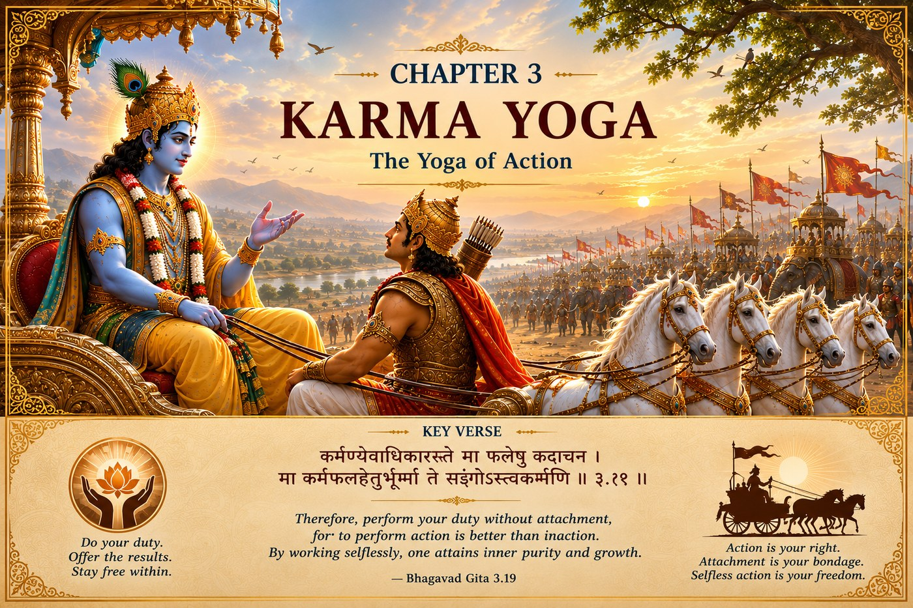

The GITA Project › Week 3 · Chapter 3

Week 3 · Chapter 3 — Karma Yoga: The Yoga of Selfless Action
Student Theme — Act Fully Without Being Owned by the Outcome
Chapter SummaryWhat Happens in Chapter Three
Chapter Three addresses Arjuna's question about the relationship between knowledge and action. Lord Shri Krishna explains that no one can remain without action, for action is part of human life. The important question is not whether to act, but how to act. He teaches Karma Yoga—performing one's duty without attachment to personal gain. Selfless action offered as a sacrifice (Yajña) sustains harmony within society and the universe. Desire and anger are identified as powerful obstacles that cloud wisdom. By mastering the senses, mind, and intellect, one can perform one's Svadharma with discipline and become an instrument of Dharma.
How the great teachers illuminate this chapter — each from their own lineage of wisdom.
Explains that selfless action is a means to purify the mind and prepare it for Self-knowledge. Liberation is attained through knowledge of the Self, but disciplined action performed without attachment removes selfishness and mental impurity. Desire is the principal obstacle because it binds the individual to worldly identification. Karma Yoga therefore becomes an important preparation for higher spiritual realization.
Teaches that all actions should be performed as loving service to the Supreme Lord. Duty is not merely an obligation but an opportunity to express devotion. When work is offered to God without selfish expectation, it becomes sacred. Karma Yoga strengthens both character and devotion, enabling the seeker to fulfill responsibilities while remaining connected to the Divine.
Emphasizes that every action should be guided by the will of the Supreme Lord. Human beings should neither abandon duty nor act from selfish desire. By recognizing dependence upon God and performing one's rightful responsibilities with humility, the individual contributes to the preservation of Dharma and social order.
Presents Karma Yoga as the art of effective living. Work becomes a path for personal growth when performed with excellence, discipline, and freedom from selfish attachment. He encourages readers to focus on contribution rather than recognition. Selfless action develops leadership, resilience, and emotional maturity while reducing anxiety about results.
Highlights the inner transformation produced by selfless work. Attachment to results creates stress, disappointment, and frustration. By dedicating actions to the Lord and accepting outcomes with faith, the mind becomes peaceful and focused. Karma Yoga teaches that success lies in sincere effort guided by Dharma rather than in external rewards alone.
Common Threads of Dharma All five teachers affirm that action is unavoidable, but selfish attachment is optional. Dharma is fulfilled by performing one's rightful responsibilities with integrity, humility, and dedication to a higher purpose. Desire clouds judgment, while selfless service purifies the heart. Work performed according to Dharma benefits both the individual and society.
…we know what the right thing is, yet we struggle to act upon it.
Knowing is important. Understanding is valuable. But eventually every person reaches a moment where knowledge alone is no longer enough. A decision must be made. An action must be taken. Character is revealed not by what we know, but by what we choose to do. Chapter Three begins at exactly that moment.
One question — Why should you do the right thing when it's harder, and no one would know if you didn't?
A moment you may know — The homework after a long day. The promise you could quietly break. The chore no one asked you to do.
This chapter's promise — You will learn how ordinary actions, done with the right intention, quietly build an extraordinary character.
If wisdom is so high, why act at all?
Arjuna has listened carefully to Lord Shri Krishna. He has heard profound teachings about the eternal nature of the Self, the importance of wisdom, and the need to see beyond temporary emotions. Yet one question continues to trouble him. If wisdom is greater than action — why act at all? Would it not be better to step away from responsibility? Wouldn't avoiding difficult situations bring greater peace?
This question is not unique to Arjuna. Every one of us eventually wonders whether avoiding responsibility might be easier than embracing it. Lord Shri Krishna's answer becomes one of the defining teachings of the Bhagavad Gita.
Understanding the SituationMost people enjoy doing what they like. Far fewer enjoy doing what is right when it is difficult. Completing homework after a long day. Keeping a promise even when no one will know if we break it. Helping at home without being asked. Choosing honesty when cheating appears easier. Standing beside someone who is being excluded.
Life continually places before us opportunities to choose between convenience and Dharma. These ordinary moments quietly shape extraordinary character.
The Court of Dharma™Six steps into the question of action
- One Situation
- Arjuna wonders why he should continue acting if wisdom is the highest goal.
- One Dilemma
- Should we withdraw from responsibility, or actively fulfill our duties?
- One Question
- Why should I continue doing the right thing when it seems easier not to?
- One Conversation
- Krishna explains that action itself is unavoidable — every person acts through thought, word, and deed. The real question is not whether we act, but how. Action motivated only by personal gain strengthens attachment; action performed according to Dharma, without selfishness, becomes Karma Yoga. When responsibilities are performed with sincerity, they contribute not only to our own growth but to the well-being of everyone around us.
- One Virtue
- Responsibility — the willingness to do what is right because it is right, understanding that every choice has consequences for others.
- One Life Practice
- Complete one responsibility, quietly and willingly, before anyone reminds you. (Full practice below.)
Three verses on action as offering
Verse 1 — Act without attachment · 3.19
तस्मादसक्त: सततं कार्यं कर्म समाचर ।
असक्तो ह्याचरन्कर्म परमाप्नोति पूरुष: ॥
tasmād asaktaḥ satataṁ kāryaṁ karma samāchara
asakto hyācharan karma param āpnoti pūruṣhaḥ
“Therefore, without attachment, constantly perform action which is duty, for, by performing action without attachment, man verily reacheth the Supreme.”
— Bhagavad Gita 3.19 · trans. Annie Besant (1922), public domain — via Wikisource
Words to Remember — asakta unattached · kārya that which ought to be done, duty · karma action · samāchara perform well.
In plain words. This is Chapter 2's teaching turned into daily instruction: don't wait to feel like it, and don't act only for the reward. Do what ought to be done, fully, and let go of the grip on results.
Reflect: What is one duty you tend to do only when you feel like it?
Verse 2 — People follow example, not lectures · 3.21
यद्यदाचरति श्रेष्ठस्तत्तदेवेतरो जन: ।
स यत्प्रमाणं कुरुते लोकस्तदनुवर्तते ॥
yad yad ācharati śhreṣhṭhas tat tad evetaro janaḥ
sa yat pramāṇaṁ kurute lokas tad anuvartate
“Whatsoever a great man doeth, that other men also do; the standard he setteth up, by that the people go.”
— Bhagavad Gita 3.21 · trans. Annie Besant (1922), public domain — via Wikisource
Words to Remember — śhreṣhṭha the noble, the best · ācharati acts, conducts oneself · pramāṇa standard, example · loka the world, people.
In plain words. You are always teaching someone — a younger sibling, a friend, a teammate — by what you do, not what you say. Leadership begins with personal example.
Reflect: Who is quietly watching how you behave? What are they learning?
Verse 3 — Better your own path, imperfectly · 3.35
श्रेयान्स्वधर्मो विगुण: परधर्मात्स्वनुष्ठितात् ।
स्वधर्मे निधनं श्रेय: परधर्मो भयावह: ॥
śhreyān swa-dharmo viguṇaḥ para-dharmāt sv-anuṣhṭhitāt
swa-dharme nidhanaṁ śhreyaḥ para-dharmo bhayāvahaḥ
“Better one's own duty, though destitute of merit, than the duty of another, well discharged. Better death in the discharge of one's own duty; the duty of another is full of danger.”
— Bhagavad Gita 3.35 · trans. Annie Besant (1922), public domain — via Wikisource
Words to Remember — swa-dharma one's own duty/path · para-dharma another's path · viguṇa imperfect.
A verse that is often misread
This is not “stay in your lane forever” or “never change or grow.” Read at student level, it means: an honest, imperfect effort at your real responsibility is worth more than an impressive imitation of someone else's. Being authentically yourself beats performing a borrowed role.
Reflect: Where are you tempted to copy someone else's path instead of walking your own?
When two duties pull in opposite directions
“Do your duty” sounds simple until two duties collide — and Chapter 3 knows this.
A situation without an obvious answer
Aisha's family runs a small shop and needs her help every evening. She is also gifted at science and has been offered a place in an after-school research program that meets those same evenings — a real chance at the future she dreams of. Her parents haven't asked her to choose; they're simply counting on her. Duty to family, or duty to her own calling (swa-dharma)? Both are real. Both matter.
3.35 seems to favour her own path — but 3.19's “act as duty, without selfish attachment” warns her to check whether she's choosing from love or from ego.
The Gita does not resolve this for Aisha. It asks her to look honestly at intention, consequence, and the people affected — and then to act with sincerity and own the result. Responsibility is rarely a single clear line; it is the wisdom to weigh real duties against each other. A thoughtful person could choose either way — what matters is the honesty and care behind the choice.
Character in Practice · ResponsibilityWhat it means. Doing what is right because it is right — and owning the effect your actions have on others.
What it does not mean. Carrying everyone's burdens, or doing things only for praise.
In daily life. Finishing what you start; keeping a promise; doing your share even when others don't.
How it's misread. As joyless duty. Krishna calls responsibility an opportunity to serve with purpose, not a burden.
Recognizing progress — without self-righteousness. You need reminding less often. Pair responsibility with perseverance — the will to keep going when it stops being easy.
The group project where you carry more than your share. The team where you show up to practice even when unmotivated. The younger sibling who copies exactly what you do. In each, 3.19 and 3.21 are at work: do your part fully, without keeping score — because your steady example quietly sets the standard everyone around you follows.
Leadership LabImagine you are working on a group project. Some members contribute very little. Others expect you to complete most of the work. You feel frustrated and wonder, “Why should I do my part when others are not doing theirs?” What would Lord Shri Krishna encourage? Would Dharma change because someone else failed to meet their responsibility? Or would Dharma invite you to keep doing what is right — while also addressing the situation honestly and respectfully?
Leadership often begins the moment we decide not to let someone else's behavior determine our own character.
Discussion Circle- ObserveWhat question is troubling Arjuna at the start of Chapter 3, and how does Krishna reframe it?
- InterpretWhat is the difference between doing an action “for the reward” and doing it “as duty”? (3.19)
- ConnectDescribe a responsibility you do only when reminded. What would change if you did it willingly?
- Ethical tensionReturn to Aisha. Family duty or her own calling — what would you weigh most, and why?
- ApplyWho is watching your example right now, and what standard are you setting for them? (3.21)
- ChallengeSomeone says, “If others aren't pulling their weight, I shouldn't have to either.” Respond using this chapter.
Purpose: feel the difference between action-for-praise and action-as-offering. Time: 15–20 min to plan; carried out during the week · Format: individual, shared back next class · Materials: journal.
- Choose one helpful action you can do this week that no one will know about and no one will thank you for.
- Do it quietly, without hinting at it or seeking credit.
- Afterward, write: How did it feel to act with no reward? Did the action change how you saw yourself?
- Next class, share only what you're comfortable sharing — the point is inner, not public.
The Willing-Responsibility Practice
Choose one responsibility you normally complete only after being reminded. This week, complete it willingly — before anyone asks. Do it quietly. Do it sincerely. Do not seek praise.
At the end of the week, reflect: How did choosing responsibility change the way you viewed the task? How did it change the way you viewed yourself?
1. Personal. Name one responsibility you have at home, school, or in your community.
2. Dharma. Do you do it because someone is watching, or because it is right? Be honest.
3. Character. Where do you keep score of who's doing their share? What would letting go of the scoreboard change?
4. Action commitment. One responsibility I will do willingly and unasked this week:
5. A private question (you never have to share this): Is there a duty you've been avoiding because it's hard, not because it's wrong?
For a parent or guardian — please listen more than you speak. This is a conversation, not a quiz.
1. What is a responsibility you carry that most people never notice?
2. How did you learn to do the right thing even when no one was watching?
3. Is there a way our family could share responsibilities more fairly?
Teacher Note — Chapter 3
Objective: students can define Karma Yoga as action performed as duty, without selfish attachment, and give a personal example.
Likely question: “Doesn't 3.35 mean I should never try new things or change paths?” → No; frame swa-dharma as authentic responsibility, not a caste-lock or a ban on growth.
Misconception to avoid: that Karma Yoga means working joylessly or never caring about results. It means full effort plus release of the grip on outcomes.
Sensitive-topic alert: the fairness discussion can surface real group-work resentments; keep it about principle, not naming classmates.
Transition to Chapter 4: Arjuna will ask where this wisdom comes from — and Krishna reveals it is ancient, and why He appears across the ages.
Week in One Minute
- Teaching
- Do what ought to be done, fully and without selfish attachment — that is Karma Yoga.
- Key verse
- “Giving up attachment, perform actions as a matter of duty…” — 3.19
- Dharma insight
- Your steady example sets a standard others quietly follow (3.21).
- Practice
- Do one responsibility willingly, quietly, unasked.
A question to carry forward — Whose example am I setting, and is it one I'd be proud for them to follow?
In Chapter Four, Arjuna's questions deepen. Lord Shri Krishna explains that the wisdom He is sharing is not new — it is timeless, passed down through a long lineage of teachers. He reveals why knowledge, action, and purpose have always been connected, and why the Divine appears whenever Dharma declines. True learning, we will discover, is not simply acquiring information — it is understanding how eternal wisdom guides every generation.
Spiritual practices can support well-being, but students experiencing persistent distress should speak with a trusted adult and, when necessary, a qualified health professional.